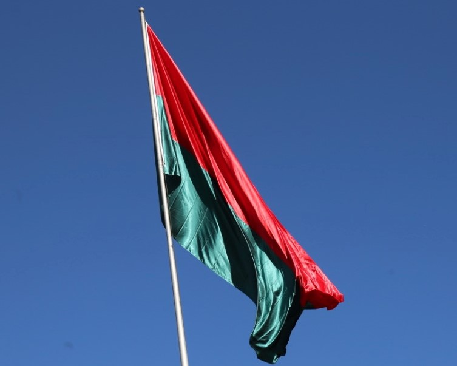
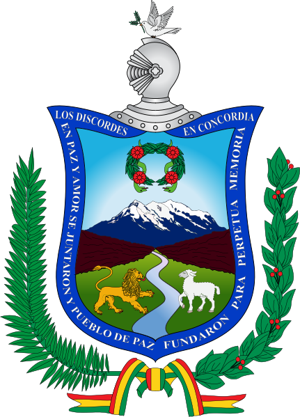
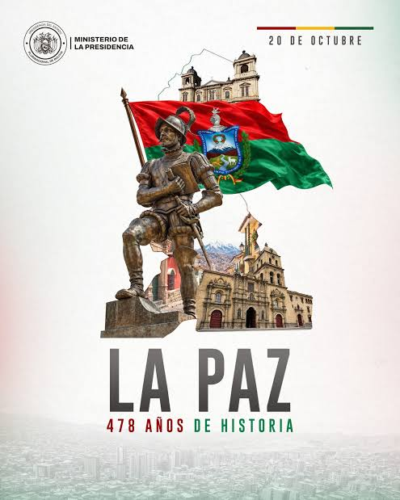
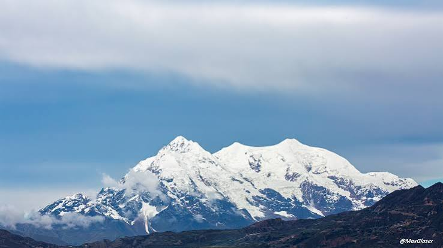

historia
La Paz (oficialmente Nuestra Señora de La Paz) es la sede de gobierno y centro financiero de Bolivia, además de ser la capital del departamento de La Paz. En la ciudad se albergan los órganos ejecutivo, legislativo y electoral. La Plaza Murillo, plaza principal de la ciudad, se encuentra a una altitud aproximada de 3636 m s. n. m. Ubicada en el oeste de Bolivia, a 68 km al sureste del lago Titicaca, La Paz está situada en un cañón creado por el río Choqueyapu, rodeada por las altas montañas del altiplano, entre ellas el nevado Illimani, cuya silueta ha sido el emblema más importante de la ciudad desde su fundación. La ciudad es la metrópoli más alta del mundo. Con una topografía accidentada, ofrece vistas únicas de la cordillera Real. Debido a su elevación, tiene un clima subtropical de altura, con veranos lluviosos e inviernos secos.
 |  |
 |  |